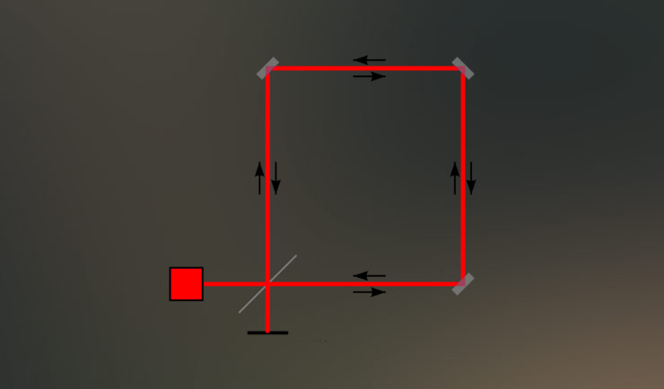
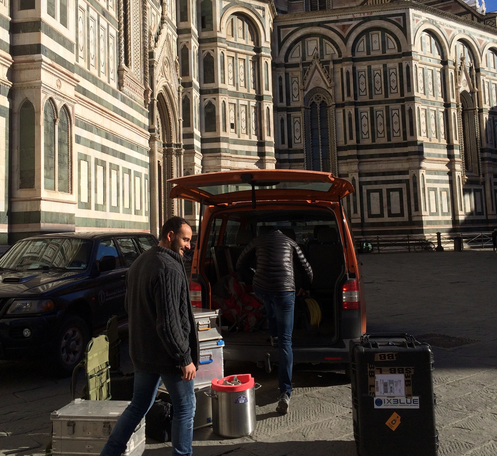
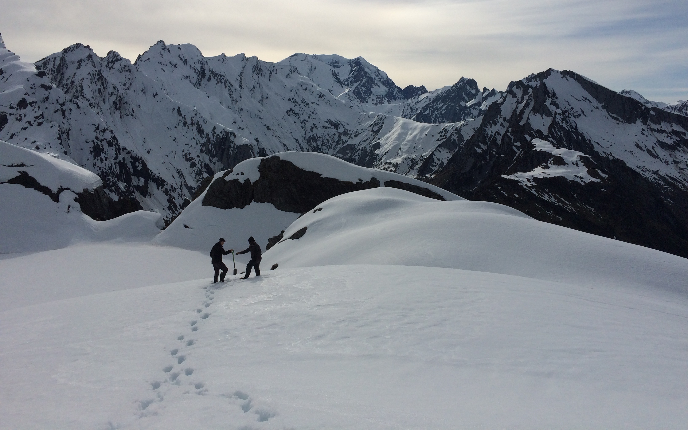

Hi, I'm Bryant. I study earthquakes and I live in Alaska.
I'm a seismologist, which means I spend my days looking at wiggles on a screen.
Typically these wiggles are recorded using very expensive slinkies (seismometers) buried in
the ground, which shake and bounce due to earthquakes, the oceans, or people doing things.
My particular interest is in the field of seismic imaging (specifically, adjoint tomography),
which means I use seismic waves and supercomputers to probe and understand the structure of the
Earth (think MRI or CT scans).
In adjoint tomography, we generate fake wiggles using computer simulations and 3D Earth models.
By systematically changing the model, we can line up the fake wiggles with the real wiggles.
Ultimately, this updated model can give us a better idea about the ground beneath our
feet. Neat!

My research in a nutshell: [left] a computer simulation of seismic waves radiating away
from an earthquake (black star) to be recorded by a seismometer (white triangle);
[right] vertical shaking comparing the actual recording of this earthquake (black) and the
simulated shaking (red). Note that time is sped up dramatically.
SPECFEM Users Workshop
In October 2022, we held a virtual SPECFEM Users Workshop to teach new users how to use the spectral element solver, SPECFEM.
Leveraging Docker containers,
Jupyter notebooks and Zoom, we were able
to host up to 180 participants over three days, where they learned how to run forward simulations, generate sensitivity kernels, and perform
seismic inversions. Recordings and workshop material is free and available for use,
check it out!

Subducted Seamounts
Using our new model of the Earth's crust below the North Island of New Zealand,
myself and co-authors suggested that we have imaged two previously-unrecognized
seamounts (underwater mountains) subducted below the continent. Their presence may
affect how we think about seismic activity within this region.
This work was chosen for an
Editor's highlight in Eos!

Adjoint Tomography in New Zealand
My doctoral research
(now published as a pair of companion papers:
1,
2)
involved seismic imaging of the Hikurangi subduction zone and tectonic
interpretations of newly resolved structures in the crust below
the North Island of New Zealand. We employed an imaging method known as adjoint
tomography, which seeks to minimize differences between observed
and simulated seismic waveforms.

I am developing open-source Python packages that facilitate the automation of
adjoint tomography workflows
(SeisFlows), and seismic data
handling and misfit quantification within these workflows
(Pyatoa).

NZ Adjoint TOMography model
One of the main products of my PhD was the
New Zealand Adjoint TOMography model (NZ ATOM).
NZ_ATOM_north is an adjoint tomography-derived velocity model for the North Island
of New Zealand, and the adjacent Hikurangi subduction zone.

Broadband EAst COast Network
The Broadband EAst COast Network (BEACON)
was a temporary deployment of 20 broadband seismic instruments in the central
Hawke's Bay and Tararua regions. The network was deployed to supplement receiver
coverage over the Hikurangi subduction interface.

Rotational Seismology
My master's work
involved analysis of amplitudes from rotational ground motion sensors. Using a
large catalog of global earthquakes, we empirically derived a rotational magnitude
scale to understand the charactersitics of amplitude decay for rotation signals.
I was also involved in development of a
rotational seismology event database.
PhD, Geophysics (2018 – 2021)
Adjoint tomography of the Hikurangi subduction zone and the North Island of New Zealand
Victoria University of Wellington, Wellington, New Zealand
Advisors: Yoshihiro Kaneko, John Townend
(2021 Doctoral Dean's List recipient)
MSc, Geophysics (2015 – 2017)
Analysis of rotational motion amplitudes on local and global scales
Ludwig-Maximilians-Universität München & Technische Universität München, Munich, Germany
Advisors: Heiner Igel, Celine Hadziiannou, Stefanie Donner, Joachim Wassermann
BSc, Physics // Minor in German Studies (2011 – 2015)
Determining Love wave phase velocity through analysis of rotational ground motion
University of California Santa Barbara, Santa Barbara, California
Advisor: Toshiro Tanimoto
Strong upper-plate heterogeneity at the Hikurangi subduction margin (North Island,
New Zealand) imaged by adjoint tomography
Bryant Chow, Yoshihiro Kaneko, Carl Tape, Ryan Modrak, Nick Mortimer, Stephen Bannister,
John Townend
Journal of Geophysical Research: Solid Earth 127.1 (2022): e2021JB022865.
Evidence for deeply-subducted
lower-plate seamounts at the Hikurangi subduction margin: implications for seismic and
aseismic behavior
Bryant Chow, Yoshihiro Kaneko, John Townend
Journal of Geophysical Research: Solid Earth 127.1 (2022): e2021JB022866.
(EOS Editor's Highlight: Adjoint tomography illuminates Hikurangi margin complexity)
An automated workflow for adjoint
tomography — Waveform misfits and synthetic inversions for the North Island,
New Zealand
Bryant Chow, Yoshihiro Kaneko, Carl Tape, Ryan Modrak, John Townend
Geophysical Journal International 223.3 (2020): 1461-1480.
Love wave amplitude decay from
rotational ground motions
Bryant Chow, Joachim Wassermann, Berhard S A Schuberth, Celine Hadziioannou,
Stefanie Donner, Heiner Igel
Geophysical Journal International 218.2 (2019): 1336-1347.
I got into geophysics because I wanted to do physics "outside". Fortunately, it's not all just
coding and supercomputers.

Fieldwork at Giotto's Bell Tower on the Piazza del Duomo, where
we installed broadband and rotational seismometers at various floors
to measure the normal modes of this freestanding tower (Florence, Italy; 2016).

I received formal training to operate 4WD vehicles and side-by-sides (pictured) to
take on BEACON fieldwork (mentioned above). Typically this involved zippin' around
muddy farm paddocks and lugging marine batteries in and out of a ute
(Hawke's Bay, New Zealand; 2018).

Fieldwork has gotten me to some amazing places, like this snow-covered mountain
top in the southern Alps (New Zealand), where our seismic station was buried so
deep we had to break out the GPS to figure out where to dig
(Southern Alps, New Zealand; 2018).

I have experience installing, servicing and removing a variety of seismic site
installations, from temporary (battery-only), to semi-permanent (solar panel
sites; pictured) to permanent (hooked up to city mains) stations
(Southern Alps, New Zealand; 2018).
During my PhD, I had the privilege to join in on "South Island fieldwork"
(twice!) maintaining seismic stations along New Zealand's Alpine Fault, either
from the tailgate of a ute, or (shown here) ferried in by some of New Zealand's
finest heli pilots (Southern Alps, New Zealand; 2018).